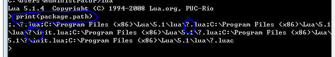

加載模塊
require 將查找模塊是否加載 若未加載 (加載之 並且 package.loaded[modname] = 模塊 並且返回模塊 [此操作一般由模塊自動完成]) 若已經加載 直接返回 加載的模塊 package.loaded[modname] = nil 相當於 刪除模塊 require 找到 *.lua文件 就使用 loadfile 加載 若是c模塊 就是用 loadlib加載
搜索路徑
lua 加載路徑 記錄在 package.path (啟動時使用 LUA_PATH 環境變量初始化) c模塊 加載路徑 記錄在 package.cpath(啟動時使用 LUA_CPATH 環境變量初始化)  所有 ? 會被替換了 模塊名 如 加載路徑為 c:/?.lua require "mod" 將加載 c:/mod.lua 模塊
編寫模塊
直接寫一個 table 並且返回之 便可 require 會為其設置好 環境 (但一般不這麼做 而是 不返回任何東西 由模塊自己 設置好 環境 _G["模塊名"] = package.loaded[modname] = )
example
my.lua
--[[
local modname = ... --require 會將模塊名 傳入(文件名)
local M = {} --定義模塊table
--將模塊 配置到全局
_G[modname] = M
package.loaded[modname] = M
--為了在下面的新環境中 可以調用 全局函數 重定義 元表
setmetatable(M,{__index = _G})
--為 當前模塊設置 新環境 以免污染全局環境
--setfenv(1,M) 5.2 開始取消了setfenv 而使用 _ENV(但不知道為何 setmetatable之後要用 _EVN 而非 _ENV) 作為環境
local _EVN = M
lua 提供了 module(...) 函數簡化上述操作
為module 傳入 package.seeall 會執行 --setmetatable(M,{__index = _G})
module(...,package.seeall) --setmetatable(M,{__index = _G})
]]
module(...,package.seeall)
function Add( ... )
local s=0
for i,v in ipairs{...} do
s = s + v
end
return s
end
test.lua
require "my"
print(Add(1,2))
注意
應該 將模塊所有操作 定義到 table 中 以免污染 全局環境